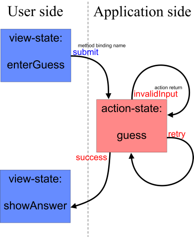

{kind=link}
{kind=link}
{kind=link}
{kind=link}
XML Components#
The simplest component definition is index.xml , specifying the tree for the "welcome" page whose template is index.html. Its components are as follows:
, specifying the tree for the "welcome" page whose template is index.html. Its components are as follows:
<?xml version="1.0" encoding="UTF-8"?>
<view>
<component type="form" id="basic-form">
<component type="command" id="startNumberGuess">
<methodbinding>#{numberGuessFlow.flow-start}</methodbinding>
</component>
<component type="command" id="startFourDigitNumberGuess">
<methodbinding>#{fourDigitNumberGuessFlow.flow-start}</methodbinding>
</component>
</component>
</view>
After having seen the Java-based component producer of "Hello World", this should be fairly clear - this file defines three RSF components as part of the view, one of type UIForm with ID basic-form, and two commands (which will peer with the HTML <input> tags) of type UICommand. Rather than value bindings, command components have method bindings, whose last component specifies a no-arg method name on the target bean rather than a property name. All of these expressions beginning with # signs and curly brackets are part of the RSF EL expression language, or value language.
Compare this components file with the corresponding XHTML template file index.xhtml - note that the rsf:id attributes in the template correspond to the components with the same id attribute. For templates without branch components, this relationship is very straightforward.
Method bindings and flow beans#
In general, a method binding like <methodbinding>#{numberGuessFlow.flow-start}</methodbinding> refers to a no-arg method to be invoked on a bean, although in this case you can see that this would be impossible, the "method name" containing a hyphen character. For situations requiring more flexibility, such as where your actions, as here, are governed by a flow definition, the target bean (in this case numberGuessFlow, a request scope, addressible bean defined in the requestScopeApplicationContext.xml file), may be declared to be a MethodInvokingProxy and intercept attempted method invocations from RSF rather than handling them reflectively. For those interested in the gory details, the concrete type of numberGuessFlow is FlowActionProxyBean, but the more practically-oriented will only want to know that these beans are automatically created from a factory bean named flowLite-flowProxyFactory, which needs to be given an application scope bean which holds the flow definition.
The request-scope bean operating the simple "higher and lower" flow is defined as follows
<bean id="numberGuessFlow" parent="flowLite-flowProxyBean">
<property name="flow" ref="numberGuessFlowDef" />
</bean>
For reference, the flow definition bean that it refers to with the "flow" property (which itself is derived from the RSF standard bean "XMLFactoryBean") is defined in application scope like this:
<bean id="numberGuessFlowDef" parent="flowLite-flowDefinition">
<property name="location">
<value>/WEB-INF/flows/numberGuess-flow.xml</value>
</property>
</bean>
Flow definition#
The application scope flow definition bean refers to one of the flow definition files we saw in our webapp. In fact this flow definition was taken line-for-line from our parent example, the Spring Web Flow number guessing sample which you might consider downloading for comparison purposes. It's important to note that RSF is currently not using Spring Web Flow itself, but a lightweight reimplementation which only supplies the core capabilities you see here. However, even this feature level is sufficient to gain the main expressive power of well-packaged, reusable flows, with a greater level of cohesion say, than JSF's navigation definitions. There are number of options for evolving RSF's flow definition framework, starting from a potential (complete) integration with the real SWF, or something even more idiomatic such as RIFE continuations or a BeanShell based flow.
<?xml version="1.0" encoding="UTF-8"?> <!DOCTYPE webflow PUBLIC "-//SPRING//DTD WEBFLOW//EN" "http://www.springframework.org/dtd/spring-webflow.dtd"> <webflow id="numberGuess" start-state="enterGuess"> <view-state id="enterGuess" view="enterGuess"> <transition on="submit" to="guess"/> </view-state> <action-state id="guess"> <action bean="numberGuessAction"/> <transition on="invalidInput" to="enterGuess"/> <transition on="retry" to="enterGuess"/> <transition on="success" to="showAnswer"/> </action-state> <end-state id="showAnswer" view="showAnswer"/> </webflow>A Spring Web Flow
(SWF) flow consists of a collection of "view states" (presented to the user, where the transition is governed by their choice of command link) and "action states" (presented to the application, where the transition is governed by the return value from the invoked method). In SWF these may alternate arbitrarily as opposed to the raw RSF model which is set up for strict alternation between view states and action states. Most of the logic in the FlowActionProxyBean is for adapting between these two idioms.
We could diagram out this flow as follows:
|  |
By default, an SWF flow assumes that an action-state will invoke a method named after its id, on the action bean it mentions. In this case the "guess" action is targetted at the bean "numberGuessAction", which is a request-scope bean defined as follows:
<bean id="numberGuessAction" class="org.springframework.webflow.samples.numberguess.NumberGuessAction"/>
The SWF version of this class had the "data" POJO parcelled as a private static class inside the action bean. In RSF, in addition to the action class being freed of any framework dependence, the data class has been unbundled as a first-class request-scope POJO. Other than these changes, the code is line-for-line identical with the SWF implementation, and has been retained in the same package. It's well worth consulting the code for these POJOs, NumberGuessAction and NumberGuessData since they give an idea of the complete cleanliness that one would expect from the business layer of the ideal web application - finally freed from framework clutter, you can get on with writing domain logic in complete peace. The main innovation of JSF was the idea that this clutter removal was at least possible, but the rest of the framework placed such strong burdens on implementors that i) usually they required to implement lots of framework-coupled beans just to operate the domain model properly, and ii) in more complex cases forced them to actually pollute the domain model itself once more. One of the main innovations of RSF, request-scope programming, also solves another perennial bugbear with web frameworks which is the scoping issue.
Head - Number Guessing
Page 1 - Simple XML components and flow definitions
Page 2 - Request scope bindings and error handling
Page 3 - Dynamic views and replicators
Add new attachment
List of attachments
| Kind | Attachment Name | Size | Version | Date Modified | Author | Change note |
|---|---|---|---|---|---|---|
png |
numberguess-flow-small.png | 47.1 kB | 1 | 19-Jul-2006 09:36 | AntranigBasman |
{kind=link}
{kind=link}
Documentation
Developers
Javadocs
Designers
Sample RSF Apps
Presentations
Acronyms
Downloads
Current Release
Trunk
Distributions
Old Versions
Community
Q&A
Forums
Mailing Lists
Issue Tracker
People
Design
Roadmap
Integrations
Concepts
Philosophy